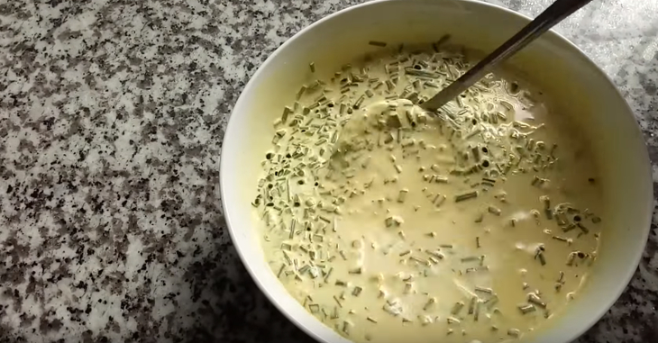
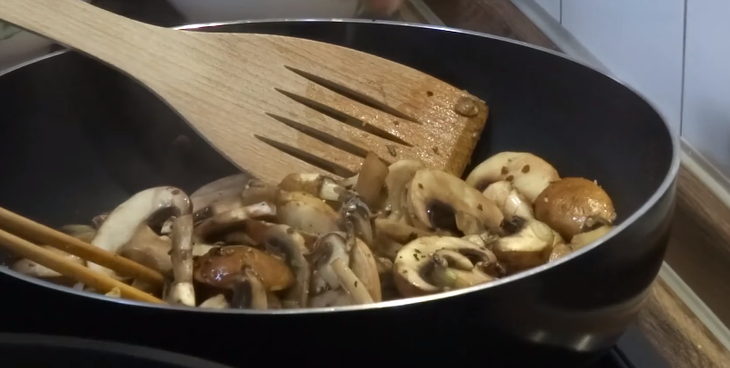
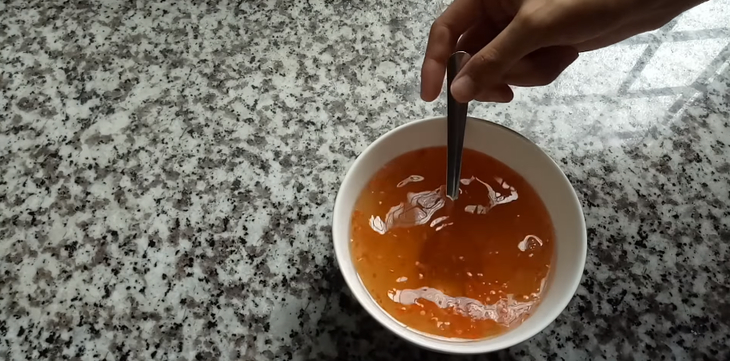

Bánh xèo chay
-
Thành phần
- Bột bánh xèo 500 gram
- Nấm hương 100 gram
- cà rốt 1 củ
- Giá 300 Gram
- Đậu phụ chiên sẵn 4 miếng
- Bột nghệ 1 muỗng cafe
- Gia vị quen thuộc
Hướng dẫn thực hiện
Đậu xanh đã được bỏ vỏ, bạn ngâm trong nước ấm khoảng 30 phút cho mềm rồi cho vào nồi hấp khoảng 15 phút cho chín mềm. Nấm hương ngâm nước ẩm khoảng 15 - 20 phút cho nở sau đó rửa sạch lại, để ráo và thái lát mỏng. Đậu phụ đã chiên bạn rửa sạch, để ráo và thái thành những lát mỏng. Cà rốt gọt sạch vỏ, rửa sạch, để ráo rồi dùng dao nạo bào thành sợi nhỏ. Nếu không có dao nạo bạn thái cà rốt thành những sợi nhỏ dài vừa ăn. Rửa sạch hành lá và thái khúc nhỏ. Rửa sạch giá, ngâm với nước muối loãng khoảng 20 phút, rửa lại với nước rồi vớt ra rổ để ráo nước. Các loại rau sống, rau cải nhặt sạch, rửa sau đó ngâm với nước muối loãng khoảng 20 phút, rửa lại với nước rồi vớt ra để ráo.


Cho hết gói bột bánh xèo vào tô to, vì là bột pha sẵn nên bột đã có đầy đủ hành khô, nước dừa, gia vị tuy nhiên bạn sẽ nêm thêm các gia vị cho bánh đậm đà. Bạn cho 150ml nước cốt dừa, 850ml nước lọc, (đảm bảo 1 lít nước), 1 muỗng cà phê bột nghệ, 1 muỗng canh bột nêm, 2 muỗng canh dầu ăn và 1 ít hành lá vào bột bánh xèo rồi trộn đều lên cho hỗn hợp này hoà quyện vào nhau. Để bột nghỉ tầm 30 phút cho bột nở ra hết.
- 
Bắc chảo lên bếp đun sôi dầu rồi cho hành phi thơm tiếp tục cho cà rốt, nấm hương, đậu phụ đã thái mỏng vào xào cho thật chín. Thêm 1 muỗng cà phê nước mắm chay, 1/2 muỗng bột nêm chay vào, gia vị có thể tăng giảm theo khẩu vị của các bạn.
- 
Bắc chảo lên và vặn lửa lớn, cho một chút dầu ăn vào chảo để tráng bánh không bị dính. Chảo đã nóng già các bạn múc một muỗng canh bột bánh đã pha vào tráng đều khắp mặt chảo. Các bạn nhớ là phải dàn đều bột kín mặt chảo nhé. Đậu xanh trải đều lên bề mặt bánh, tiếp tục cho hỗn hợp đậu phụ, cà rốt, nấm hương đã xào rồi lấy giá đã rửa sạch rải một lớp lên trên cùng, đậy nắp thật kín và đun khoảng 2 - 3 phút là bánh chín. Cuối cùng, bạn mở nắp, vẫn đun nhỏ lửa cho bánh chín giòn, thời gian đun khoảng 3 phút thì gập đôi bánh lại, cho bánh ra đĩa là có thể thưởng thức được rồi.

Nước mắm chay bạn cho khoảng 4 muỗng canh vào tô, pha thêm khoảng 2 muỗng canh nước cho bớt mặn, cho thêm một muỗng canh đường vào khuấy đều, thái thêm vài lát ớt và vắt thêm nước cốt chanh cho chua ngọt hợp khẩu vị gia đình.
- 